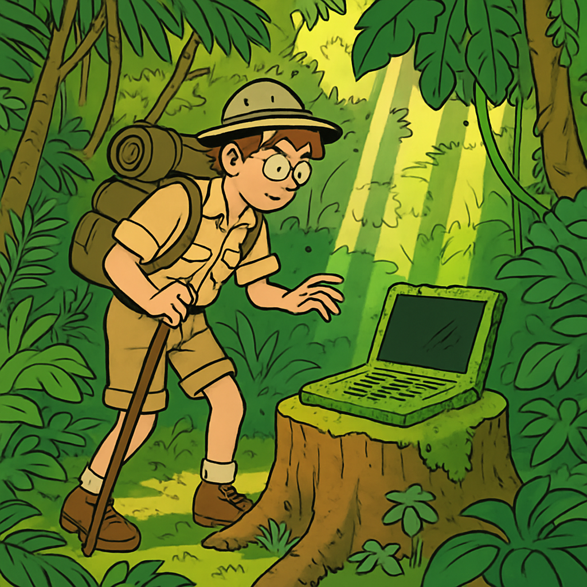

Microlearning
Hast du dich schon mal gefragt, was in deinem Laptop steckt? Ein einzelnes Smartphone enthält über 60 verschiedene chemische Elemente – viele davon sind seltene Erden, die unter problematischen Bedingungen abgebaut werden.

Das bedeutet: Der grösste ökologische Hebel liegt nicht im Stromsparen beim Nutzen, sondern in der Verlängerung der Lebensdauer.
- Lebensdauer von 3 auf 5 Jahre verlängern = ca. 30% weniger ökologischer Fussabdruck
- Akku tauschen oder RAM aufrüsten statt neues Gerät kaufen
- SSD-Upgrade bei älteren Geräten bringt oft einen deutlichen Leistungsschub
- Lüfter reinigen und Wärmeleitpaste erneuern hält Geräte kühl und lebendig
Tat / Einstellung
Finde heraus, wie alt dein Gerät ist – und überlege dir eine konkrete Massnahme, um seine Lebensdauer zu verlängern.
Anleitung
- macOS: Apple-Menü →
Über diesen Mac→ Übersicht - Windows:
Win + R→msinfo32eingeben → Systemübersicht - Linux: Terminal →
sudo dmidecode -t system
Notiere dir:
- Wie alt ist dein Gerät?
- Welche konkrete Massnahme könnte die Lebensdauer verlängern?
Reflexion
Welche Faktoren beeinflussen deine Entscheidung, ein neues Gerät zu kaufen – und wie viele davon sind wirklich technisch notwendig?
Oft sind es Software-Updates, Trends oder der Wunsch nach neuen Features – nicht die Hardware selbst –, die ein Gerät «alt» erscheinen lassen. Ein Gerät, das noch funktioniert, ist kein altes Gerät.
Challenge
Recherchiere: Gibt es für dein ältestes Gerät zuhause eine Möglichkeit, es aufzurüsten oder einem neuen Zweck zuzuführen?
Ideen: Home-Server, Media-Center, Lern-PC für jüngere Geschwister, Linux-Installation für neues Leben.
Dokumentiere deine Idee in 2–3 Sätzen.